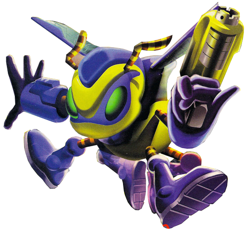
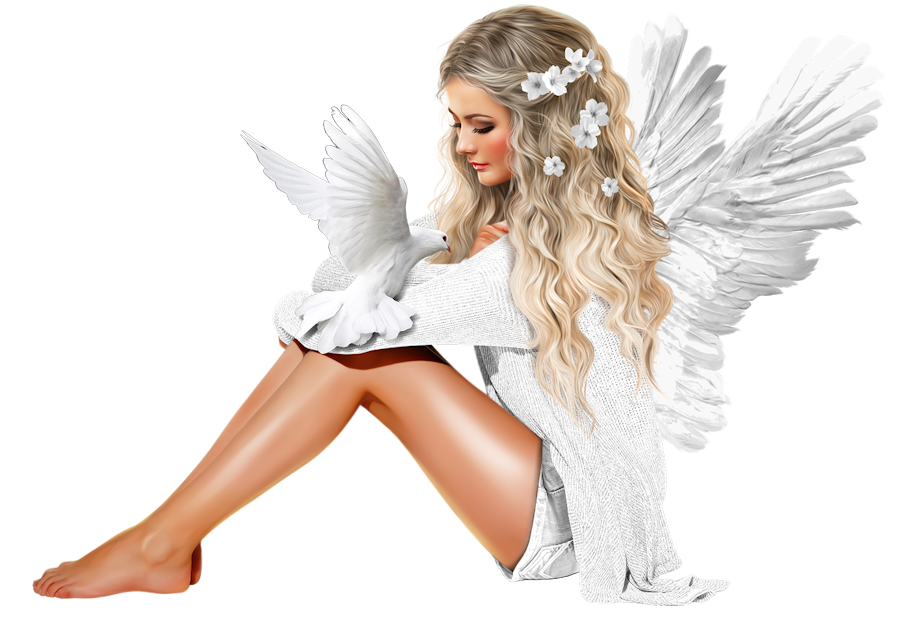
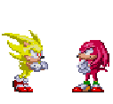

<!doctype html>
<html>
<head>
  <title>no_skips_online</title>
  <link rel="icon" href="https://u.cubeupload.com/no_skips/KazaaIcon2004.png"/>


<meta name="viewport" content="width=device-width, initial-scale=1.0">


<!DOCTYPE html>

<style>

.bird {
    background-image: url(http://www.iamramraj.com/demo/Flying_birds_CSS_animation_examples/bird-cells.svg);
    background-size: auto 100%;
    width: 88px;
    height: 125px;
    will-change: background-position;
    -webkit-animation-name: fly-cycle;
    animation-name: fly-cycle;
    -webkit-animation-timing-function: steps(10);
    animation-timing-function: steps(10);
    -webkit-animation-iteration-count: infinite;
    animation-iteration-count: infinite;
    filter: invert(100%);
}
.bird--one {
    -webkit-animation-duration: 1s;
    animation-duration: 1s;
    -webkit-animation-delay: -0.5s;
    animation-delay: -0.5s;
}
.bird--two {
    -webkit-animation-duration: 0.9s;
    animation-duration: 0.9s;
    -webkit-animation-delay: -0.75s;
    animation-delay: -0.75s;
}
.bird--three {
    -webkit-animation-duration: 1.25s;
    animation-duration: 1.25s;
    -webkit-animation-delay: -0.25s;
    animation-delay: -0.25s;
}
.bird--four {
    -webkit-animation-duration: 1.1s;
    animation-duration: 1.1s;
    -webkit-animation-delay: -0.5s;
    animation-delay: -0.5s;
}
.bird-container {
    position: absolute;
    top: 20%;
    left: -7.5vw;
    -webkit-transform: scale(0);
    transform: scale(0);
    will-change: transform;
    -webkit-animation-name: fly-right-one;
    animation-name: fly-right-one;
    -webkit-animation-timing-function: linear;
    animation-timing-function: linear;
    -webkit-animation-iteration-count: infinite;
    animation-iteration-count: infinite;
}
.bird-container--one {
    -webkit-animation-duration: 15s;
    animation-duration: 15s;
    -webkit-animation-delay: 0;
    animation-delay: 0;
}
.bird-container--two {
    -webkit-animation-duration: 16s;
    animation-duration: 16s;
    -webkit-animation-delay: 1s;
    animation-delay: 1s;
}
.bird-container--three {
    -webkit-animation-duration: 14.6s;
    animation-duration: 14.6s;
    -webkit-animation-delay: 9.5s;
    animation-delay: 9.5s;
}
.bird-container--four {
    -webkit-animation-duration: 16s;
    animation-duration: 16s;
    -webkit-animation-delay: 10.25s;
    animation-delay: 10.25s;
}
 @-webkit-keyframes fly-cycle {
 100% {
 background-position: -900px 0;
}
}
 @keyframes fly-cycle {
 100% {
 background-position: -900px 0;
}
}
@-webkit-keyframes fly-right-one {
 0% {
 left: -10%;
 -webkit-transform: scale(0.3);
 transform: scale(0.3);
}
 10% {
 left: 10%;
 -webkit-transform: translateY(2vh) scale(0.4);
 transform: translateY(2vh) scale(0.4);
}
 20% {
 left: 30%;
 -webkit-transform: translateY(0vh) scale(0.5);
 transform: translateY(0vh) scale(0.5);
}
 30% {
 left: 50%;
 -webkit-transform: translateY(4vh) scale(0.6);
 transform: translateY(4vh) scale(0.6);
}
 40% {
 left: 70%;
 -webkit-transform: translateY(2vh) scale(0.6);
 transform: translateY(2vh) scale(0.6);
}
 50% {
 left: 90%;
 -webkit-transform: translateY(0vh) scale(0.6);
 transform: translateY(0vh) scale(0.6);
}
 60% {
 left: 110%;
 -webkit-transform: translateY(0vh) scale(0.6);
 transform: translateY(0vh) scale(0.6);
}
 100% {
 left: 110%;
 opacity: 1;
 -webkit-transform: translateY(0vh) scale(0.6);
 transform: translateY(0vh) scale(0.6);
}
}
@keyframes fly-right-one {
 0% {
 left: -10%;
 -webkit-transform: scale(0.3);
 transform: scale(0.3);
}
 10% {
 left: 10%;
 -webkit-transform: translateY(2vh) scale(0.4);
 transform: translateY(2vh) scale(0.4);
}
 20% {
 left: 30%;
 -webkit-transform: translateY(0vh) scale(0.5);
 transform: translateY(0vh) scale(0.5);
}
 30% {
 left: 50%;
 -webkit-transform: translateY(4vh) scale(0.6);
 transform: translateY(4vh) scale(0.6);
}
 40% {
 left: 70%;
 -webkit-transform: translateY(2vh) scale(0.6);
 transform: translateY(2vh) scale(0.6);
}
 50% {
 left: 90%;
 -webkit-transform: translateY(0vh) scale(0.6);
 transform: translateY(0vh) scale(0.6);
}
 60% {
 left: 110%;
 -webkit-transform: translateY(0vh) scale(0.6);
 transform: translateY(0vh) scale(0.6);
}
 100% {
 left: 110%;
 opacity: 1;
 -webkit-transform: translateY(0vh) scale(0.6);
 transform: translateY(0vh) scale(0.6);
}
}
@-webkit-keyframes fly-right-two {
 0% {
 left: -10%;
 opacity: 1;
 -webkit-transform: translateY(-2vh) scale(0.5);
 transform: translateY(-2vh) scale(0.5);
}
 10% {
 left: 10%;
 -webkit-transform: translateY(0vh) scale(0.4);
 transform: translateY(0vh) scale(0.4);
}
 20% {
 left: 30%;
 -webkit-transform: translateY(-4vh) scale(0.6);
 transform: translateY(-4vh) scale(0.6);
}
 30% {
 left: 50%;
 -webkit-transform: translateY(1vh) scale(0.45);
 transform: translateY(1vh) scale(0.45);
}
 40% {
 left: 70%;
 -webkit-transform: translateY(-2.5vh) scale(0.5);
 transform: translateY(-2.5vh) scale(0.5);
}
 50% {
 left: 90%;
 -webkit-transform: translateY(0vh) scale(0.45);
 transform: translateY(0vh) scale(0.45);
}
 51% {
 left: 110%;
 -webkit-transform: translateY(0vh) scale(0.45);
 transform: translateY(0vh) scale(0.45);
}
 100% {
 left: 110%;
 -webkit-transform: translateY(0vh) scale(0.45);
 transform: translateY(0vh) scale(0.45);
}
}
@keyframes fly-right-two {
 0% {
 left: -10%;
 opacity: 1;
 -webkit-transform: translateY(-2vh) scale(0.5);
 transform: translateY(-2vh) scale(0.5);
}
 10% {
 left: 10%;
 -webkit-transform: translateY(0vh) scale(0.4);
 transform: translateY(0vh) scale(0.4);
}
 20% {
 left: 30%;
 -webkit-transform: translateY(-4vh) scale(0.6);
 transform: translateY(-4vh) scale(0.6);
}
 30% {
 left: 50%;
 -webkit-transform: translateY(1vh) scale(0.45);
 transform: translateY(1vh) scale(0.45);
}
 40% {
 left: 70%;
 -webkit-transform: translateY(-2.5vh) scale(0.5);
 transform: translateY(-2.5vh) scale(0.5);
}
 50% {
 left: 90%;
 -webkit-transform: translateY(0vh) scale(0.45);
 transform: translateY(0vh) scale(0.45);
}
 51% {
 left: 110%;
 -webkit-transform: translateY(0vh) scale(0.45);
 transform: translateY(0vh) scale(0.45);
}
 100% {
 left: 110%;
 -webkit-transform: translateY(0vh) scale(0.45);
 transform: translateY(0vh) scale(0.45);
}
}
</style>
</head>
<meta name="viewport" content="width=device-width, initial-scale=1">

</div>
<div>
  <div class="container">
    <div class="bird-container bird-container--one">
      <div class="bird bird--one"></div>
    </div>
    <div class="bird-container bird-container--two">
      <div class="bird bird--two"></div>
    </div>
    <div class="bird-container bird-container--three">
      <div class="bird bird--three"></div>
    </div>
    <div class="bird-container bird-container--four">
      <div class="bird bird--four"></div>
    </div>
  </div>
</div>
</html>


</head>


<!-- BUCK -->

  


<!-- WINAMP -->
<div id="app" style="margin-left: -1400px;"></div>
<script src="https://unpkg.com/webamp"></script>
<script>
    const app = document.getElementById("app")
    const webamp = new Webamp();
    webamp.renderWhenReady(app);
</script>


<!-- topmost div -->
<body>
<div class="no_skips_online"><h1>NO SKIPS ONLINE</h1> 
  </div>





<style>

body {
background-image: url(https://u.cubeupload.com/no_skips/futurepast.png);
text-align: center;
font-family: Impact;
font-size: 75px;
cursor: url(https://ani.cursors-4u.net/cursors/cur-13/cur1157.ani), url(https://ani.cursors-4u.net/cursors/cur-13/cur1157.png), auto !important;
  }

  
  h1{
   -webkit-text-stroke: 1px black;
   color: white;
   animation: online 2s infinite;
   position: absolute; margin-left: 23%; margin-top: 1%;

}


h1:hover {

        cursor: url(https://ani.cursors-4u.net/cursors/cur-13/cur1157.ani), url(https://ani.cursors-4u.net/cursors/cur-13/cur1157.png), auto !important;

}

/* ANIMATED NO SKIPS TEXT * text-shadow values --- first px value for X-axis, second for Y-distance, third for spread. 1px 1px 1px is basic hard shadow --> */
@keyframes online {
              80% {
               text-shadow: 10px 20px 30px black;

}}

 
  h2 {

  -webkit-text-stroke: 1px yellowgreen;
  text-shadow: 5px 5px 2px blueviolet;
  color: black;
  font-size: 35px;
  font-family: Cambria

  }


    p {
    font-family: Georgia
    font-size: 20px;
    

    }


}

      img.clippy:hover {
  filter: invert(100%);
  transition: 0.2s;
  position: absolute;
  top: 1000px;
  left: 830px;
      }


</style>

<br><br>


<!-- KAZAA LOGO -->

<div style="height: 200px">
<a href="noskips.online">

<style>

img.noskips {
    -webkit-transition: all 0.5s ease-in-out;
    -moz-transition: all 0.5s ease-in-out; 
    -o-transition: all 0.5s ease-in-out; 
    -ms-transition: all 0.5s ease-in-out; 
    border-radius:60px;
    transition-duration: 0.5s;
    }

img.noskips:hover { filter: invert(100%);
    -webkit-transform: rotate(720deg); 
    -moz-transform: rotate(360deg); 
    -o-transform: rotate(360deg);
    -ms-transform: rotate(360deg); 
    transform: translate()
}
</style>
<br>
</div>
<br>

<!-- METAL SONIC -->


<!-- DANTE-->


<style>

.fun {
  -webkit-text-stroke:  1px black;
  transform: scale(1.5);
  opacity: 20%;
  z-index: -999;
  }

  </style>


<div class="oldgods">
<!-- sonic n knuckles -->



<!-- laptop box -->
  <style>

.oldgods { margin-left: 37%;
       margin-top: 50px;
       height:300px;
       width:500px;
       background-image: url(img/ibook.jpg);
       background-size: 500px 300px;
       background-position: center;
       border-style: outset;
       border-color: white;
}


.oldgods:hover {
  transition: transform 0.2s ease-in-out;
  transform: scale(1.05);
}

</style>


<h2 style="margin-right: 210px;
           margin-top: 90px;
           transform: rotate(-40deg);">no_skips</h2>


<div style="margin-top: -140px;
            font-size: 30px;
            color: limegreen;
            text-align:right;
            margin-right: 35px">


  <a target="_blank" href="www.instagram.com/no_skips"><font style="color: limegreen">Images</a></font><br><br>
  Music<br>

</div></div>

<!-- clippy -->


 <meta http-equiv="Content-Type" content="text/html; charset=utf-8">
    <meta name="viewport" content="initial-scale=0.60, minimum-scale=0.60, maximum-scale=0.60">
    <style type="text/css">

      #stage {
        position: relative;
        margin: -800px auto;
        width: 600px;
        height: 400px;
        /*
        
        Setting the perspective of the contents of the stage
        but not the stage itself
        
        */
        -webkit-perspective: 800;
      }

      #rotate {
        margin: 0 auto;
        width: 600px;
        height: 600px;
        /* Ensure that we're in 3D space */
        -webkit-transform-style: preserve-3d;
        /*
        Make the whole set of rows use the x-axis spin animation
        for a duration of 7 seconds, running infinitely and linearly
        */
        -webkit-animation-name: x-spin;
        -webkit-animation-duration: 7s;
        -webkit-animation-iteration-count: infinite;
        -webkit-animation-timing-function: linear;
      }

      .ring {
        margin: 0 auto;
        height: 110px;
        width: 600px;
        -webkit-transform-style: preserve-3d;
        -webkit-animation-iteration-count: infinite;
        -webkit-animation-timing-function: linear;
      }
      
      .ring > :nth-child(odd) {
        background-image: url(https://u.cubeupload.com/no_skips/KazaaIcon2004.png);
        background-size: 100px
      }

      .ring > :nth-child(even) {
        background-image: url(https://u.cubeupload.com/no_skips/KazaaIcon2004.png);
        background-size: 100px;
      }

      .poster {
        position: absolute;
        left: 250px;
        width: 100px;
        height: 100px;
        opacity: 0.7;
        color: rgba(0,0,0,0.9);
        -webkit-border-radius: 10px;
      }
      
      .poster > p {
        font-family: 'Georgia', serif;
        font-size: 36px;
        font-weight: bold;
        text-align: center;
        margin-top: 28px;
      }

      /*
      Set up each row to have a different animation duration
      and alternating y-axis rotation directions.
      */
      #ring-1 {
        -webkit-animation-name: y-spin;
        -webkit-animation-duration: 5s;
      }

      #ring-2 {
        -webkit-animation-name: back-y-spin;
        -webkit-animation-duration: 4s;
      }

      #ring-3 {
        -webkit-animation-name: y-spin;
        -webkit-animation-duration: 3s;
      }

      /*

      Here we define each of the three individual animations that
      we will be using to have our 3D rotation effect. The first
      animation will perform a full rotation on the x-axis, we'll
      use that on the whole set of objects. The second and third
      animations will perform a full rotation on the y-axis in
      opposite directions, alternating directions between rows.
    
      Note that you currently have to specify an intermediate step
      for rotations even when you are using individual transformation
      constructs.

      */
      @-webkit-keyframes x-spin {
        0%    { -webkit-transform: rotateX(0deg); }
        50%   { -webkit-transform: rotateX(180deg); }
        100%  { -webkit-transform: rotateX(360deg); }
      }

      @-webkit-keyframes y-spin {
        0%    { -webkit-transform: rotateY(0deg); }
        50%   { -webkit-transform: rotateY(180deg); }
        100%  { -webkit-transform: rotateY(360deg); }
      }

      @-webkit-keyframes back-y-spin {
        0%    { -webkit-transform: rotateY(360deg); }
        50%   { -webkit-transform: rotateY(180deg); }
        100%  { -webkit-transform: rotateY(0deg); }
      }
    </style>

    <script type="text/javascript">

      const POSTERS_PER_ROW = 12;
      const RING_RADIUS = 200;

      function setup_posters (row)
      {
        var posterAngle = 360 / POSTERS_PER_ROW;
        for (var i = 0; i < POSTERS_PER_ROW; i ++) {
          var poster = document.createElement('div');
          poster.className = 'poster';
          // compute and assign the transform for this poster
          var transform = 'rotateY(' + (posterAngle * i) + 'deg) translateZ(' + RING_RADIUS + 'px)';
          poster.style.webkitTransform = transform;
          // setup the number to show inside the poster
          var content = poster.appendChild(document.createElement('p'));
          content.textContent = i;
          // add the poster to the row
          row.appendChild(poster);
        }

      }

      function init ()
      {
        setup_posters(document.getElementById('ring-1'));
        setup_posters(document.getElementById('ring-2'));
        setup_posters(document.getElementById('ring-3'));
      }

      // call init once the document is fully loaded
      window.addEventListener('load', init, false);

    </script>
  </head>

    <div id="stage">
      <div id="rotate">
        <div id="ring-1" class="ring"></div>
        <div id="ring-2" class="ring"></div>
        <div id="ring-3" class="ring"></div>
      </div>
    </div>


  
</html>


<style type="text/css">

/* Circle Text Styles */

#outerCircleText {

/* Optional - DO NOT SET FONT-SIZE HERE, SET IT IN THE SCRIPT */

font-style: italic;

font-weight: bold;

font-family: 'comic sans ms', verdana, arial;

color: #000;

/* End Optional */


/* Start Required - Do Not Edit */

position: absolute;top: 0;left: 0;z-index: 3000;cursor: default;}

#outerCircleText div {position: relative;}

#outerCircleText div div {position: absolute;top: 0;left: 0;text-align: center;}

/* End Required */

/* End Circle Text Styles */

</style>


<script language="JavaScript1.2">

/*
Flying Butterfly script (By BGAudioDr@aol.com)
Modified slightly/ permission granted to Dynamic Drive to feature script in archive
For full source, visit http://www.dynamicdrive.com
*/

var Ymax=8;                                //MAX # OF PIXEL STEPS IN THE "X" DIRECTION
var Xmax=8;                                //MAX # OF PIXEL STEPS IN THE "Y" DIRECTION
var Tmax=10000;                        //MAX # OF MILLISECONDS BETWEEN PARAMETER CHANGES

//FLOATING IMAGE URLS FOR EACH IMAGE. ADD OR DELETE ENTRIES. KEEP ELEMENT NUMERICAL ORDER STARTING WITH "0" !!

var floatimages=new Array();
floatimages[0]='gif/butterfly.gif';
floatimages[1]='gif/butterfly.gif';

//*********DO NOT EDIT BELOW***********
var NS4 = (navigator.appName.indexOf("Netscape")>=0 && parseFloat(navigator.appVersion) >= 4 && parseFloat(navigator.appVersion) < 5)? true : false;
var IE4 = (document.all)? true : false;
var NS6 = (parseFloat(navigator.appVersion) >= 5 && navigator.appName.indexOf("Netscape")>=0 )? true: false;
var wind_w, wind_h, t='', IDs=new Array();
for(i=0; i<floatimages.length; i++){
t+=(NS4)?'<layer name="pic'+i+'" visibility="hide" width="10" height="10"><a href="javascript:hidebutterfly()">' : '<div id="pic'+i+'" style="position:absolute; visibility:hidden;width:10px; height:10px; z-index:1000"><a href="javascript:hidebutterfly()">';
t+='';
t+=(NS4)? '</a></layer>':'</a></div>';
}
document.write(t);

function moveimage(num){
if(getidleft(num)+IDs[num].W+IDs[num].Xstep >= wind_w+getscrollx())IDs[num].Xdir=false;
if(getidleft(num)-IDs[num].Xstep<=getscrollx())IDs[num].Xdir=true;
if(getidtop(num)+IDs[num].H+IDs[num].Ystep >= wind_h+getscrolly())IDs[num].Ydir=false;
if(getidtop(num)-IDs[num].Ystep<=getscrolly())IDs[num].Ydir=true;
moveidby(num, (IDs[num].Xdir)? IDs[num].Xstep :  -IDs[num].Xstep , (IDs[num].Ydir)?  IDs[num].Ystep:  -IDs[num].Ystep);
}

function getnewprops(num){
IDs[num].Ydir=Math.floor(Math.random()*2)>0;
IDs[num].Xdir=Math.floor(Math.random()*2)>0;
IDs[num].Ystep=Math.ceil(Math.random()*Ymax);
IDs[num].Xstep=Math.ceil(Math.random()*Xmax)
setTimeout('getnewprops('+num+')', Math.floor(Math.random()*Tmax));
}

function getscrollx(){
if(NS4 || NS6)return window.pageXOffset;
if(IE4)return document.body.scrollLeft;
}

function getscrolly(){
if(NS4 || NS6)return window.pageYOffset;
if(IE4)return document.body.scrollTop;
}

function getid(name){
if(NS4)return document.layers[name];
if(IE4)return document.all[name];
if(NS6)return document.getElementById(name);
}

function moveidto(num,x,y){
if(NS4)IDs[num].moveTo(x,y);
if(IE4 || NS6){
IDs[num].style.left=x+'px';
IDs[num].style.top=y+'px';
}}

function getidleft(num){
if(NS4)return IDs[num].left;
if(IE4 || NS6)return parseInt(IDs[num].style.left);
}

function getidtop(num){
if(NS4)return IDs[num].top;
if(IE4 || NS6)return parseInt(IDs[num].style.top);
}

function moveidby(num,dx,dy){
if(NS4)IDs[num].moveBy(dx, dy);
if(IE4 || NS6){
IDs[num].style.left=(getidleft(num)+dx)+'px';
IDs[num].style.top=(getidtop(num)+dy)+'px';
}}

function getwindowwidth(){
if(NS4 || NS6)return window.innerWidth;
if(IE4)return document.body.clientWidth;
}

function getwindowheight(){
if(NS4 || NS6)return window.innerHeight;
if(IE4)return document.body.clientHeight;
}

function init(){
wind_w=getwindowwidth();
wind_h=getwindowheight();
for(i=0; i<floatimages.length; i++){
IDs[i]=getid('pic'+i);
if(NS4){
IDs[i].W=IDs[i].document.images["p"+i].width;
IDs[i].H=IDs[i].document.images["p"+i].height;
}
if(NS6 || IE4){
IDs[i].W=document.images["p"+i].width;
IDs[i].H=document.images["p"+i].height;
}
getnewprops(i);
moveidto(i , Math.floor(Math.random()*(wind_w-IDs[i].W)), Math.floor(Math.random()*(wind_h-IDs[i].H)));
if(NS4)IDs[i].visibility = "show";
if(IE4 || NS6)IDs[i].style.visibility = "visible";
startfly=setInterval('moveimage('+i+')',Math.floor(Math.random()*100)+100);
}}

function hidebutterfly(){
for(i=0; i<floatimages.length; i++){
if (IE4)
eval("document.all.pic"+i+".style.visibility='hidden'")
else if (NS6)
document.getElementById("pic"+i).style.visibility='hidden'
else if (NS4)
eval("document.pic"+i+".visibility='hide'")
clearInterval(startfly)
}
}

if (NS4||NS6||IE4){
window.onload=init;
window.onresize=function(){ wind_w=getwindowwidth(); wind_h=getwindowheight(); }
}

</script>

</body>